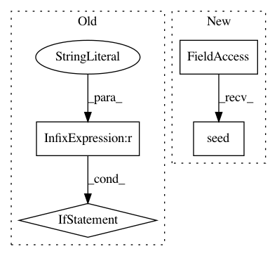

8b68349d43621619fe799ab4afc21da7f1fb2515,examples/reinforcement_learning/tutorial_PPO.py,,,#,233
Before Change
print(
"Ep: %i" % ep,
"|Ep_r: %i" % ep_r,
("|Lam: %.4f" % METHOD["lam"]) if METHOD["name"] == "kl_pen" else "",
)
plt.ion()
After Change
env = gym.make(ENV_NAME).unwrapped
// reproducible
env.seed(RANDOMSEED)
np.random.seed(RANDOMSEED)
tf.random.set_seed(RANDOMSEED)
ppo = PPO()
In pattern: SUPERPATTERN
Frequency: 3
Non-data size: 4
Instances
Project Name: tensorlayer/tensorlayer
Commit Name: 8b68349d43621619fe799ab4afc21da7f1fb2515
Time: 2019-06-10
Author: 34995488+Tokarev-TT-33@users.noreply.github.com
File Name: examples/reinforcement_learning/tutorial_PPO.py
Class Name:
Method Name:
Project Name: keras-team/keras
Commit Name: 21f0bfa239c2250f3459aa3fc011cc3f4c814e03
Time: 2015-08-24
Author: francois.chollet@gmail.com
File Name: tests/auto/test_loss_masking.py
Class Name:
Method Name:
Project Name: keras-team/keras
Commit Name: 7da1523053f2e5f4fa15c87e019b3244c8653a53
Time: 2015-12-09
Author: francois.chollet@gmail.com
File Name: tests/keras/test_constraints.py
Class Name:
Method Name: